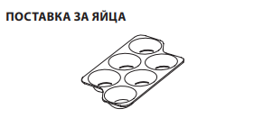
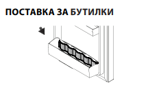
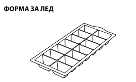
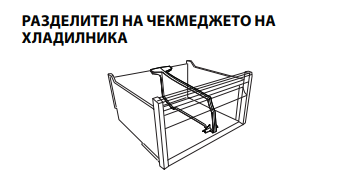
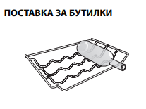
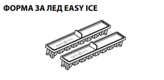
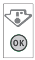

|  |  |  |
|  |  |  |
| <ВКЛ./ИЗКЛ. |
| Целият уред (и хладилното, и фризерното отделение) може да се включи, като натиснете и задържите за 2 секунди този бутон Интерфейсът показва последно зададената стойност Натиснете този бутон, за да изключите уреда Звуков сигнал ще потвърди “комутацията на уреда е изключена” |
| ИНДИКАТОР ЗА ТЕМПЕРАТУРА В ХЛАДИЛНИКА |
| Тази функция показва температурата в хладилното отделение |
| НАСТРОЙВАНЕ НА ТЕМПЕРАТУРАТА В ХЛАДИЛНИКА |
| Тя позволява циклична промяна на стойностите на температурата в хладилника; тя също така потвърждава на интерфейса избраната температура |
| СВЕТЛИНЕН ИНДИКАТОР SUPER(БЪРЗО ЗАМРАЗЯВАНЕ) |
| Светва при натискане на бутона SUPER FREEZE |
| БУТОН SUPER (БЪРЗО ЗАМРАЗЯВАНЕ) |
| Използва се за замразяване на пресни храни Когато бъде натиснат бутонът, индикаторът SUPER FREEZE светва (вижте “Включване и употреба на уреда”) Докато функцията SUPER е активна, НЕ допускайте навлизането на ВЪЗДУХ в отделението на хладилника, тъй като това би довело до прекалено ниска температура За най-добро съхранение на храната се препоръчва позиция MED Забележка: Показваните зададени стойности съответстват на средната температура в целия хладилник. |
| 6TH SENSE |
| Тази функция работи автоматично за гарантиране на оптималните условия за запазване на съхраняваните храни Функцията “6th Sense” се активира автоматично, когато: • в хладилника се постави голямо количество храни • вратичката на хладилника се остави отворена за дълго време • има продължително спиране на тока, причинявайки повишаване на вътрешната температурата на уреда до нива, които не могат да гарантират безопасно съхранение на храната |
Обезскрежаването на отделението на хладилника е напълно автоматизирано Образуването на водни капчици върху задната вътрешна стена
на отделението на хладилника показва, че е в ход автоматично обезскрежаване
Фризерите No Frost предоставят циркулация на охладен въздух около зоните за съхранение и предотвратяват образуването на лед, с което напълно се елиминира необходимостта от обезскрежаване
Замразените храни не залепват към стените, етикетите се запазват четливи и пространството за съхранение остава чисто и подредено
Тази нова кутия предлага максимална гъвкавост, за да
съхранявате храните по най-добрия възможен начин
• съхранение на месо, риба и деликатни храни;
• бързо охлаждане на горещи храни от 70°C до 3°C и на други
пресни храни и остатъци
• размразяване при ниска температура (предотвратява развитието
на микроорганизми)
В стандартни условия можете да получите температура от 0°C, когато температурата в хладилното отделение е настроена на около 4°C С увеличаване на температурата в хладилника, увеличавате също и температурата в отделението на ЧИЛЪРА
Системата No Frost извършва продължителна циркулация на
студен въздух, като по този начин
улавя влагата и не позволява
образуването на лед и скреж Системата поддържа оптимално ниво
на влажност в отделението, като запазва първоначалните качества
на храните и не позволява
залепването на храни едни за други,
с което праща в историята обезскрежаването на хладилника
Не запушвайте
вентилационните отвори, поставяйки храни или
съдове така, че да са
директно опрени до задния хладилен панел
Затваряйте добре бутилките и опаковайте храните
Поставяйте в отделението само студени храни или такива със
стайна температура
• Не забравяйте, че сготвените храни нямат по-голяма
дълготрайност от суровите
• Не съхранявайте течности в отворени съдове:
Това би довело до увеличаване на влажността в хладилника и
образуването на конденз
За разпознаване на най-студената зона в хладилника
1. Проверете дали думата “OK“ се чете ясно на индикатора (вижте
схемата)

2. Ако думата “OK” не се появява, това значи, че температурата
в твърде висока: установете РЕГУЛАТОРА НА ТЕМПЕРАТУРАТА
в положение с по-голям номер (по-студено) и изчакайте
приблизително 10 часа
температурата да се стабилизира
3. Проверете отново светлинния индикатор: ако е необходимо, го
пренастройте, като изпълните
описания процес Ако са поставени
големи количества храни или
ако вратичката на хладилника се
отваря често, е нормално индикаторът да не показва OK Изчакайте
поне 10 часа, преди да настроите РЕГУЛАТОРА НА ТЕМПЕРАТУРАТА
на по-висока стойност
Чекмеджетата за салати Crisper
в хладилника са специално
проектирани с цел запазването на плодовете и зеленчуците
свежи и хрупкави
Системата за осветление в отделението на хладилника
използва светодиодна лампичка, позволявайки както по-добро
осветление, така и много ниско потребление на енергия
Ако системата на светодиодните лампички не работи,
се свържете със сервизното обслужване за подмяна
Важно: Когато вратичката на хладилника е отворена,
се включва осветлението на отделението на хладилника
Ако вратичката се остави отворена за повече от 8 минути,
осветлението ще се изключи автоматично
Всички рафтове, капаци и изваждащи се кошници са подвижни
Забележка: посоката на отваряне на вратичката може да
се промени. Ако тази операция се извършва от отдела за
следпродажбено обслужване, тя не се покрива от гаранцията.
Препоръчва се реверсирането на посоката на отваряне на
вратичката да се извършва от двама души. Следвайте инструкциите.